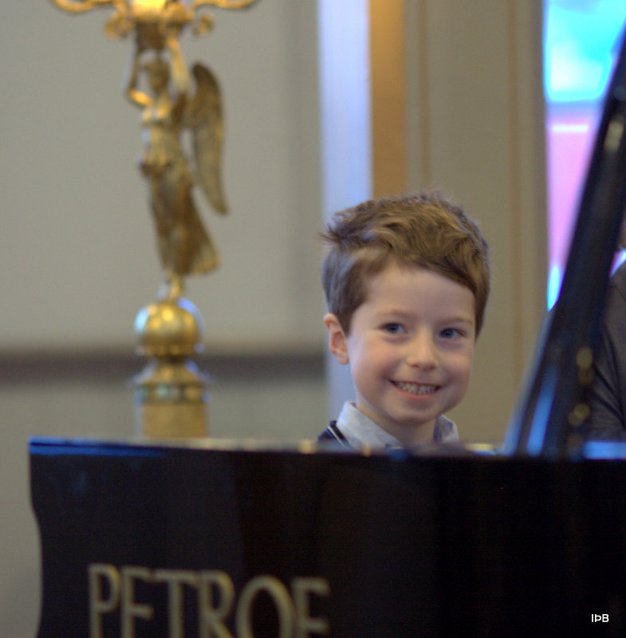
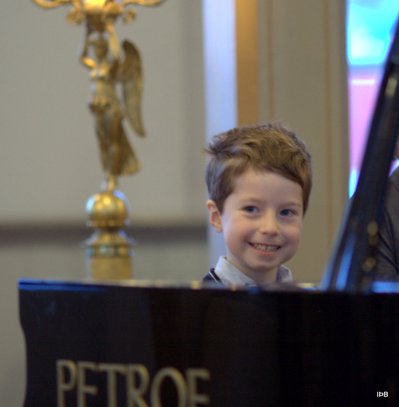

Suzukiaðferðin
Það var Japaninn Shinichi Suzuki (1898-1998) sem þróaði
tónlistarkennsluaðferð er hann nefndi móðurmálsaðferðina. Hafandi
velt því fyrir sér hvað börn virtust eiga auðvelt með að læra og
tileinka sér sitt móðurmál komst hann að þeirri niðurstöðu að það
væru ákveðnir þættir í umhverfi barna sem hvettu til þessa góða
árangurs. Það voru þættir eins og fyrirmyndir, hrós, hljóðumhverfi
barns og endurteknar æfingar þess við myndun hljóða/orða. Þessa
þætti taldi Suzuki að væri hægt að nýta í öðru námi og heimfærði
aðferðina upp á tónlistarnám. Þannig þróaði hann kennsluaðferð sem
byggir á tengslum barnsins við leiðbeinandi foreldra og skapaði um
leið einstaka aðferð fyrir foreldra að öðlast ánægjulega upplifun
með barni sínu á vegferð þroska og samveru við tónlistariðkun.
Suzukinemandinn
- Hefur gjarnan námið á aldrinum 4-6 ára.
- Lærir námsefnið fyrstu árin með hlustun af geisladiskum.
- Lærir fyrst grunnatriði í hljóðfæraleiknum áður en hann lærir
að lesa nótur (eins og börn læra fyrst að tala, svo lesa).
- Býr við nærandi, jákvæðar kringumstæður til náms þar sem
foreldrið tekur þátt í náminu.
- Fær vandaða og uppbyggilega kennslu frá vel menntuðum
kennara.
- Lærir frá upphafi góða spilatækni og vinnur með fallega
tónmyndun.
- Safnar upp námsforða, kann mörg lög sem hann hefur gaman af að
spila fyrir sjálfan sig og aðra.
- Hittir reglulega önnur börn í sama námi þar sem myndast gjarnan
vinatengsl auk þess sem börnin iðka tónlistina saman.
Árangur af Suzukinámi
Árangur af þessu námi er gjarnan mjög góður, sem sýnir sig ekki
síst í því að brottfall úr námi er áberandi lítið. Stór hluti
nemenda nær verulega góðum tökum á hljóðfæri sínu og býr að
víðtækri þekkingu á tónlist. Algengasti aldur byrjenda er 4-6 ára
en við 14-16 ára aldur er algengt að nemendur fari í hefðbundna
tónlistarskóla til framhaldnáms.
Nánari upplýsingar um sögu og hugmyndafræði Suzukiaðferðarinnar er
meðal annars að finna í eftirfarandi bókum
- Nurtured by Love – The Classic Approach to Talent Education
eftir Shinichi Suzuki og Waltraud Suzuki. A Senzay
Publications, 1983.
- To Learn With Love – A Companion for Suzuki Parents eftir
Constance Starr og William Starr. Kingston Ellis Press,
1984.
- Ability Development from Age Zero (Suzuki Method International)
eftir Shinichi Suzuki. Warner Bros. Publications Inc.,
1981.
- Indföring í Suzukiundervisning – mest for klaver, eftir Peter
Hagn-Meincke. PS.Musik, Danmark, 1990.
- Suzukitónlistaruppeldi. Handbók fyrir kennara, foreldra og aðra
uppalendur eftir Kristin Örn Kristinsson. Reykjavík 1998.
- Studying Suzuki Piano - More Than Music – A Handbook for
Teachers, Parents and Students (Suzuki Method International)
eftir Carole L. Bigler og Valery Lloyd-Watts. Summy-Birchard
Ind., 1979.
- Introducing Suzuki Piano eftir Doris Koppelman. Dichter Press,
1978.
Suzukitónlistarkennsla fer fram um heim allan og eru öflug samtök
aðstandenda aðferðarinnar sem halda úti athyglisverðum
heimasíðum
Asia Suzuki Association (ASA)
Asía (fyrir utan Japan)
www.asiasuzuki.org
European Suzuki Association (ESA)
Evrópa, Afríka og Miðausturlönd
www.europeansuzuki.org
Pan-Pacific Suzuki Association (PPSA)
Ástralía, Nýja Sjáland og Kyrrahafseyjar
www.suzukimusic.com.au
Suzuki Association of the Americas (SAA)
Norður og Suður Ameríka
www.suzukiassociation.org
Talent Education Research Institute (TERI)
Japan
www.suzukimethod.or.jp
Alþjóða Suzukisambandið (International Suzuki Association)
www.internationalsuzuki.org


 
